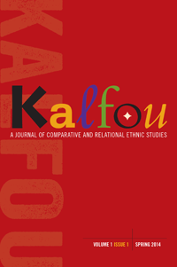

<body bgcolor="#FFFFFF" text="#000000" link="#0000FF" vlink="#CC0000" alink="#CC0000"><center><hr width="350" size="1" align="center" noshade><i>Kalfou</i> is published by Temple University Press for the Center for Black Studies Research at the University of California, Santa Barbara<hr width="350" size="1" align="center" noshade><p><a href="https://cdcshoppingcart.uchicago.edu/Cart/ChicagoBook.aspx?ISBN= &&PRESS=temple" target="_top">Buy this book!</a> | <a href="https://cdcshoppingcart.uchicago.edu/Cart/Cart.aspx?PRESS=temple" target="_top">View Cart</a> | <a href="https://cdcshoppingcart.uchicago.edu/Cart/Cart.aspx?PRESS=temple" target="_top">Check Out</a></p><p></p></center><!--none//--><h1>Kalfou</h1>
<H2>A Journal of Comparative and Relational Ethnic Studies</H2>
<H2>Volume 1, Issue 1</H2>
<h3></h3>
<P><BR> 208 pp
6x9
</P><P>Kalfou is the Haitian Kreyòl word for “crossroads.” It is a scholarly journal focused on social movements, social institutions, and social relations. We seek to build links among intellectuals, artists, and activists in shared struggles for social justice. The journal seeks to promote the development of community-based scholarship in ethnic studies among humanists and social scientists and to connect the specialized knowledge produced in academe to the situated knowledge generated in aggrieved communities.
<br>
<br>
<P>Senior Editor:
<br>George Lipsitz, <i>University of California, Santa Barbara</i>
<P>Associate Editors:
<br>Enrique Bonus, <I>University of Washington, Seattle;</i>
<br>Maria Herrera-Sobek, <i>University of California, Santa Barbara; </i>
<br>Roberta Hill, <i>University of Wisconsin, Madison; </i>
<br>Tricia Rose, <i>Brown University</i>
<P>Book Review Editor:
<br>Paul Ortiz, <i>University of Florida, Gainesville</i>
<P>Founding Editors:
<br>Claudine Michel, <i>University of California, Santa Barbara; </i>
<br>Melvin Oliver, <i>University of California, Santa Barbara</i>
<P>Managing Editor:
<br>Rose Elfman, <i>University of California, Santa Barbara</i>
<br>
<br>
<p><b>Published twice per year</b>
<br>&#32;&#32;ISSN 2151-4712
<br>E-ISSN 2372-0751
<p><b>Subscription Rates:</b>
<br>Individual &#124; $30.95
<br>Institution &#124; $125.00
<BR>&nbsp;<P><p>Subscription, submission, and advertising information will be available in the Fall.</p>
<p>See Volume 1, Issue 1 at <a href="http://tupjournals.temple.edu"><i>tupjournals.temple.edu</a></i>.</p>
<p>Join the mailing list at <a href="mailto:tupjournals@temple.edu"target="new">tupjournals@temple.edu</a></p></P><BR>&nbsp;<br>
<BR><H2>Subject Categories</H2>
<p></p>
<p align="center"><a href="https://cdcshoppingcart.uchicago.edu/Cart/ChicagoBook.aspx?ISBN= &&PRESS=temple" target="_top">Buy this book!</a> | <a href="https://cdcshoppingcart.uchicago.edu/Cart/Cart.aspx?PRESS=temple" target="_top">View Cart</a> | <a href="https://cdcshoppingcart.uchicago.edu/Cart/Cart.aspx?PRESS=temple" target="_top">Check Out</a></p><p><font face="Arial" size="1"><a href="copyright.html" onMouseOver="window.status='Web Copyright Policy';return true;" onMouseOut="window.status=''" title="Web Copyright Policy">&copy;</a> 2015 <a href="http://www.temple.edu" target="new" onMouseOver="window.status='Link to Temple University home page';return true;" onMouseOut="window.status=''" title="Link to Temple University home page">Temple University</a>. All Rights Reserved. http://www.temple.edu/tempress/titles/2358_reg.html</font></p>